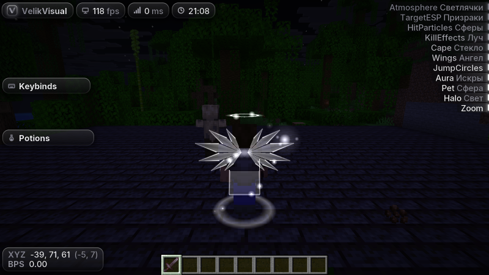
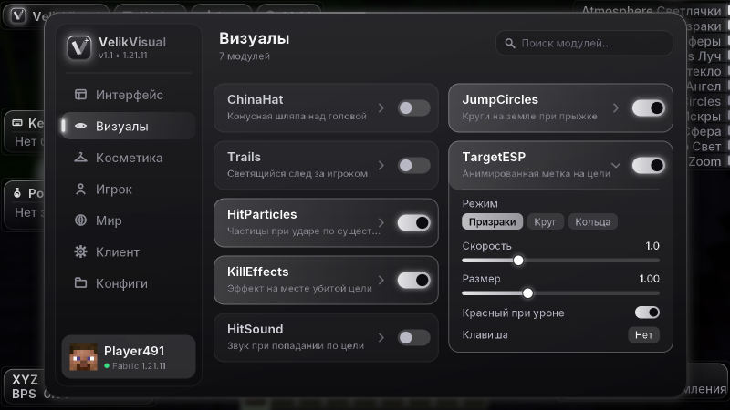
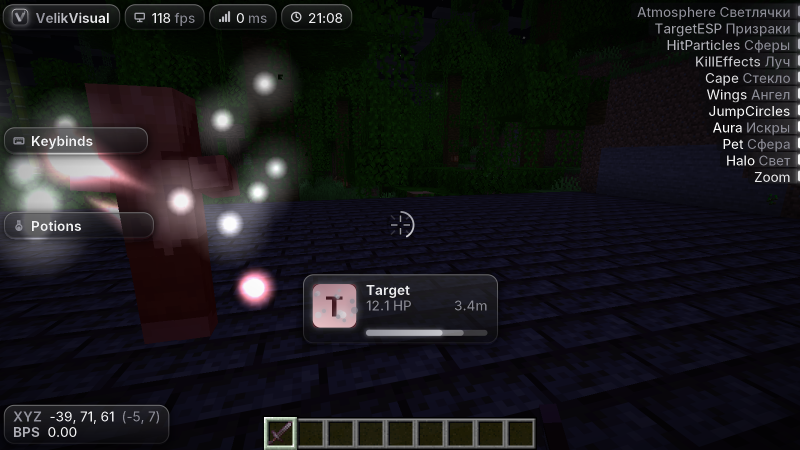
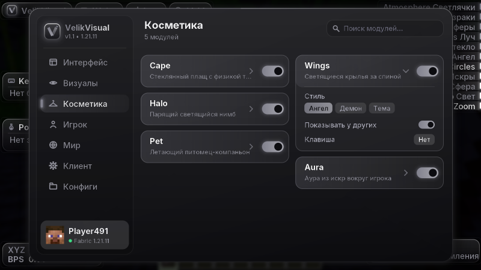
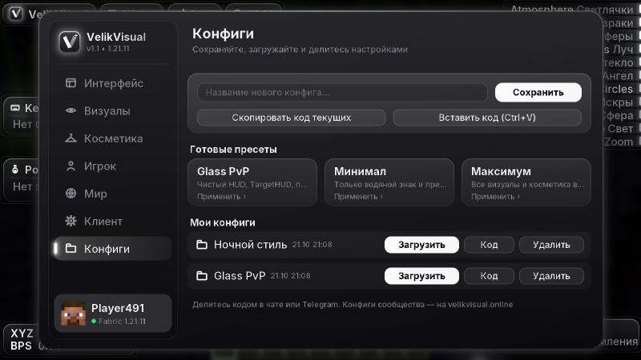
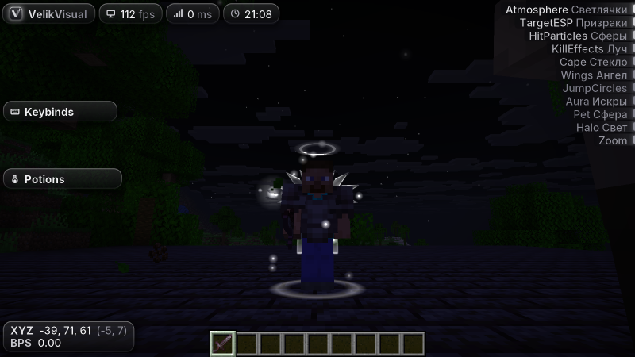

Target16.0 HP · 2.4m
TargetHUD и TargetESP
Голова, здоровье с «призрачной» полоской урона, броня цели. На самой цели — круг, кольца или светящиеся призраки.
Визуальный клиент для Minecraft 1.21 — 1.21.11. Стекло, свет и плавные анимации — без читов и без лагов.
Собственный рендер интерфейса со стеклянными панелями и сглаживанием, одинаковый на всех версиях от 1.21 до 1.21.11.
Голова, здоровье с «призрачной» полоской урона, броня цели. На самой цели — круг, кольца или светящиеся призраки.
Круги на земле при прыжке, светящийся след, частицы-сферы, звёзды, сердца и искры с настоящей физикой.
Категории, поиск, слайдеры, выбор цвета, бинды и редактор HUD: перетаскивание и размер колесом мыши.
Плащи с физикой ткани, крылья, нимбы, питомцы и ауры. Их видят все игроки с VelikVisual.
Сохраняйте настройки, делитесь коротким кодом и применяйте чужие сборки одним Ctrl+V.
Внутри jar лежат отдельные сборки под каждую ветку Minecraft, Fabric сам загружает нужную. Никаких «скачайте другую версию».
Без монтажа: так выглядит клиент в Minecraft 1.21.11. Перетаскивайте ленту или жмите стрелки.






Покупка привязывается к нику в Minecraft. Косметика появляется в игре автоматически — у вас и у всех, кто играет с VelikVisual.
Скопируйте код, откройте меню клиента → «Конфиги» → «Вставить код». Свой конфиг можно прислать нам — лучшие попадут сюда.
.minecraft/mods.Нет. VelikVisual меняет только картинку у вас на экране: ничего не отправляет на сервер, не показывает игроков сквозь стены и не помогает в бою. Правила конкретного сервера всё равно стоит проверить.
Добавьте товары в корзину, укажите ник и нажмите «Оформить заказ» — сайт покажет, как оплатить. Платёж проверяется автоматически.
После подтверждения платежа покупка привязывается к нику, который вы указали при оформлении, и косметика сама включится в игре. Её увидят все игроки с VelikVisual.
Скачать файл может любой, но функции включаются только у ников, которые купили клиент. Без покупки VelikVisual ничего не меняет в игре и показывает подсказку, где его купить. После оплаты клиент активируется сам — переустанавливать ничего не нужно.
Один файл работает на всех версиях от 1.21 до 1.21.11. Нужны Fabric Loader и Fabric API под вашу версию.
Да: в разделе «Клиент → Theme» есть 10 тем, включая свои цвета, стиль панелей (стекло или плоский), скругление, шрифт и прозрачность.
В папке .minecraft/config/velikvisual/configs. Любой конфиг превращается в короткий код VV1:… — им удобно делиться в чатах.